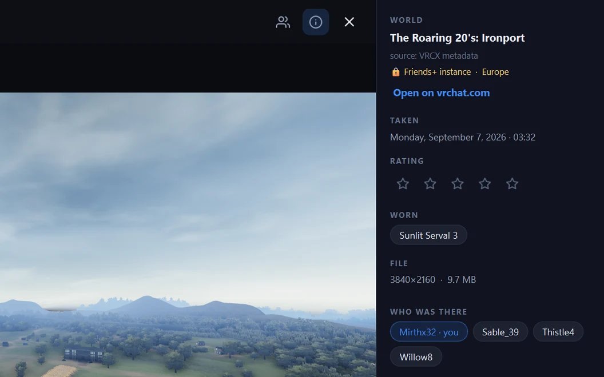
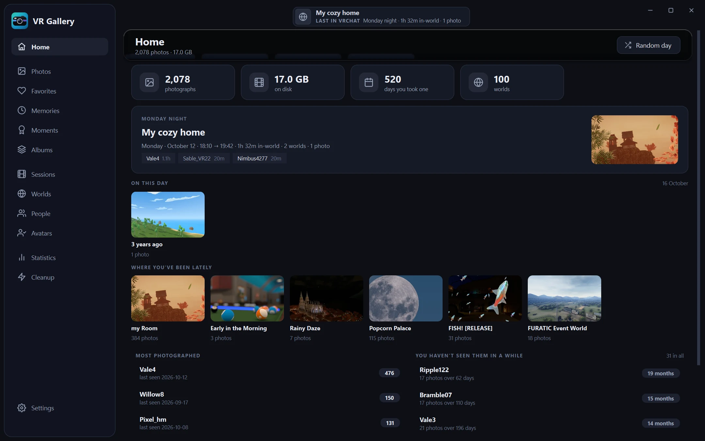
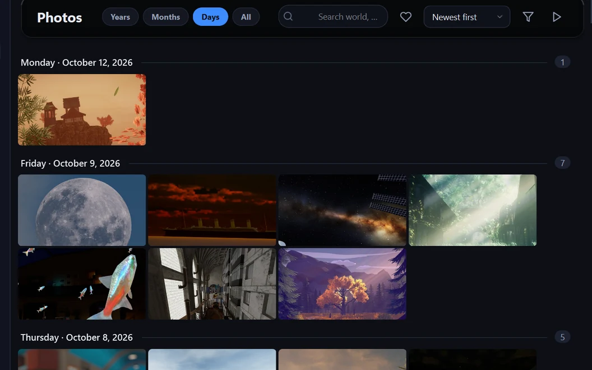
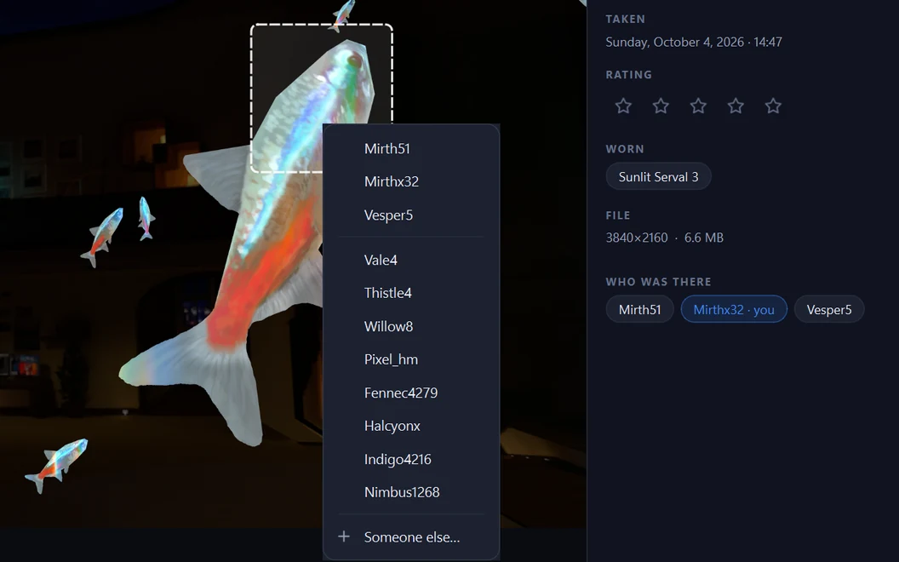
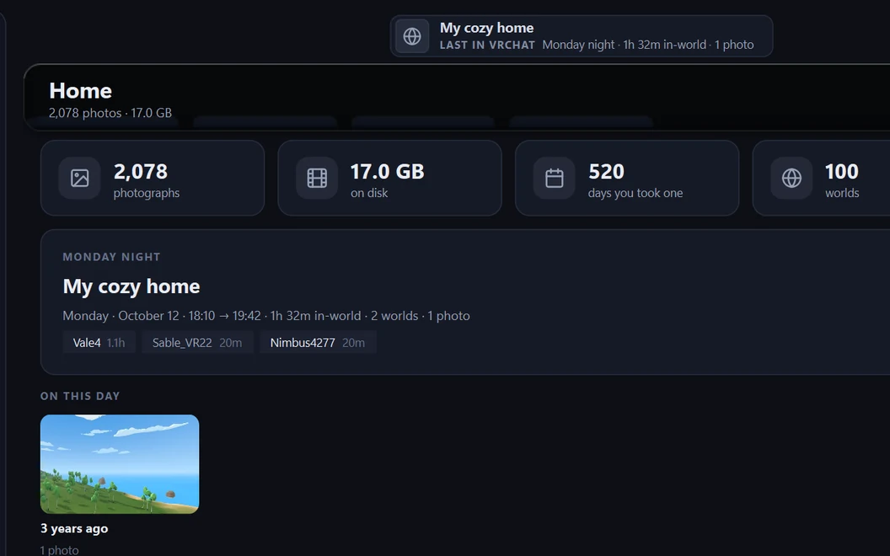
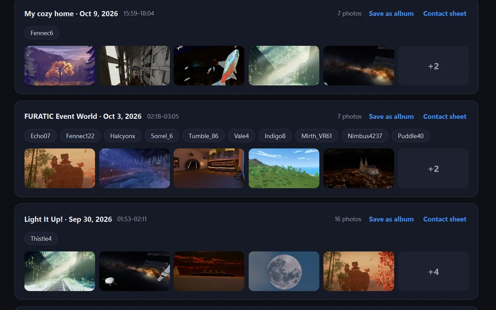
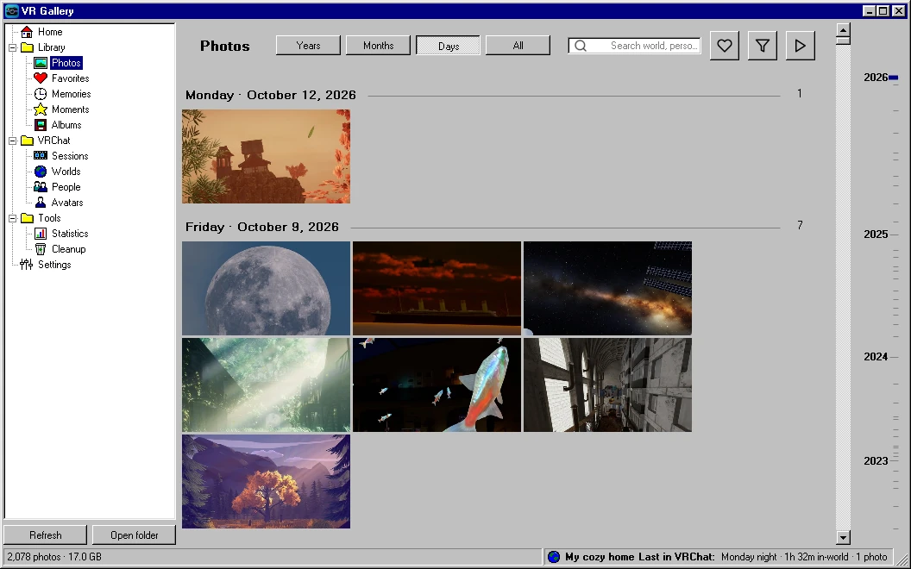

Who was there
A photo shows its world, the instance type, the avatar you wore and everyone in the instance, wherever VRChat's logs or VRCX's metadata recorded them, and who took it when it wasn't you.
A VRChat photo album that knows which world each photo was taken in and who was there, from the logs VRChat throws away.

VRChat saves a folder a month, full of time stamps. Drag across to compare it with the same days in VR Gallery.


A photo shows its world, the instance type, the avatar you wore and everyone in the instance, wherever VRChat's logs or VRCX's metadata recorded them, and who took it when it wasn't you.

Press T and box a head. The people the logs say were there come first, so it's usually one click, and an avatar you have tagged before often comes up with its name already picked.
Zoom out to find the stretch of time, then in on it; each year and month shows its best photo, and a burst of shots of one pose folds into one tile. All is the whole library as one sheet.

While VRChat runs, the title bar says which world you're in, for how long and how many photos so far; afterwards, where you were last. The app opens on Home: that evening, this day in earlier years, where you've been lately.

Photos from one sitting become a moment, with the world, the time and who was around; keep it as an album or a contact sheet. Sessions show each visit to a world: how long you stayed, who was there and what kind of instance it was.

Settings › Appearance › Look turns the whole window into a 1995 program: grey 3D panels, a navy caption, the navigation as a folder tree, Microsoft Sans Serif and 16×16 pixel icons. It takes effect after a restart.
Also: favourites, star ratings and albums · people profiles · statistics and a year-in-review poster · cleanup of black shots, bursts and duplicates · drag photos out to Explorer or Discord · Discord sharing · Quest import · verified backup to another drive · XMP sidecars for Lightroom · a Midnight or Ember ground and five accents · snaps to the screen edges like any window
Install VR Gallery.cmd. It copies the app to your user folder and adds Desktop and Start menu shortcuts. Or skip it and start VRGallery\VRGallery.exe right from the folder.Windows 10 or 11, 64-bit, no Python needed. Your photos are only read; cleanup moves files to the Recycle Bin, after asking. Nothing leaves your PC unless you share a photo yourself; the app only asks GitHub whether there is a newer version. Leave it in the tray: VRChat keeps only its last few logs, and VR Gallery copies each session before they go. Uninstall VR Gallery.cmd sits next to the installed app.
Found a bug, or have an idea? Tell me on GitHub. To hear about new versions, follow the releases feed (RSS) or watch the repository's releases on GitHub.
Browsing by year and month works properly again: going back to Days after Years shows your photos, not the year cards.
Release notes · 16 Oct 2026